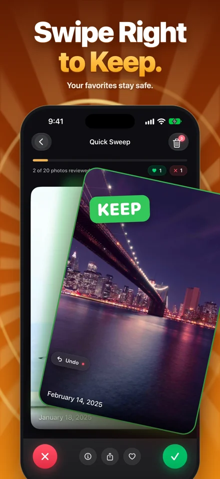
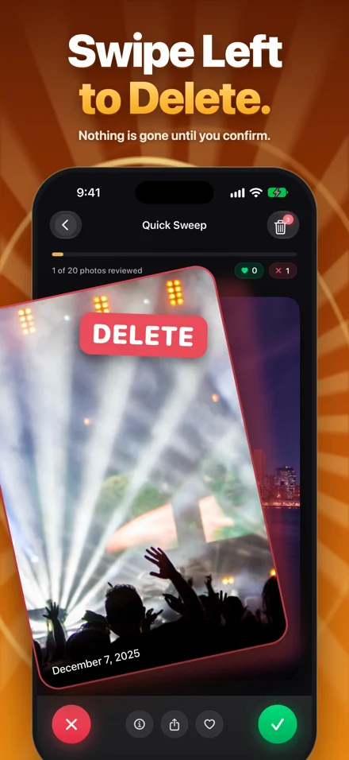
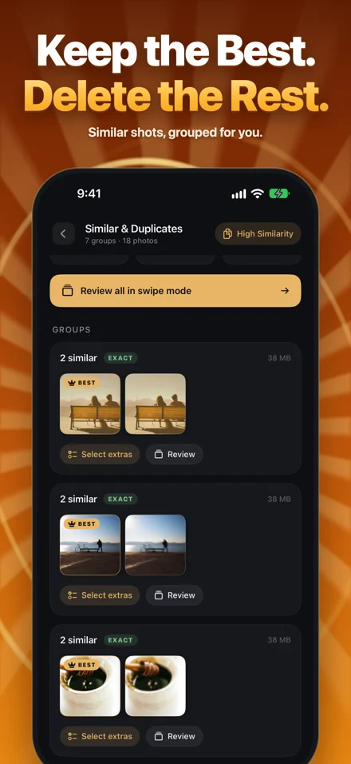

A little less clutter. A lot more room.
Keep the memories.
Lose the extras.
Photo Cleaner: Swipe & Delete gives your camera roll a personal cleanup plan. Find repeated shots, review what takes up space, and decide what stays—one easy swipe at a time.

A calmer way to clean
You decide what goes.
We help you find where to start.
Start with a plan.
Choose your cleanup priorities. See a storage estimate and a focused place to begin, instead of another endless grid.
A swipe. A decision.
Swipe right to keep, left to mark for removal. Compare similar shots, revisit screenshots, and give large videos a closer look.
Review, then remove.
Undo a swipe or restore an item from the in-app Trash Bin before confirming deletion. You're in control of the final choice.



Screens and animation use a demonstration library. Your results depend on your photos.
A useful place to start
What should you clean up first?
A handful of long videos can outweigh hundreds of screenshots. Use our free planner to estimate the space in the items you're considering removing.
Build my cleanup plan →Runs in your browser. No photos, uploads, or account.
An example, not a promise
Start with the videos. Check each one before deleting.
A real App Store review
“Práctica, sencilla, genial!”Daniiel601 · Mexico · 5 stars · August 18, 2026
“Practical, simple, great!” — English translation
Good decisions start with good information
A little guidance for your library.
Repeated photos?
Understand Apple's Duplicates collection and when similar shots need a closer look.
Find and review duplicates →iCloud switched on?
Know what deleting a photo means across your devices before starting a cleanup.
Read the iCloud guide →Too much to sort?
Break an overwhelming camera roll into small, deliberate review sessions.
Make a manageable plan →Photo analysis stays on your iPhone
Your library deserves care.
Your photos aren't uploaded for scanning or cleanup decisions. Purchase services are handled by Apple and RevenueCat. Read exactly what that means in our privacy information.
Read the privacy information →Make room for your next memory.
Photo Cleaner: Swipe & Delete · by Mohamed Elatabany
Questions, answered.
What is Photo Cleaner: Swipe & Delete?
It is an iPhone photo-cleanup app by Mohamed Elatabany. It offers a personal cleanup plan, duplicate and similar-photo review, screenshot and large-video review, and swipe controls. You review marked items before confirming deletion.
Does it upload my photos for analysis?
Photo analysis runs on your iPhone; photos are not uploaded for scanning or cleanup decisions. Apple and RevenueCat process purchase services. Apple Photos may download iCloud media when requested.
Is Photo Cleaner: Swipe & Delete free?
It starts with a one-time free allowance. Optional Pro purchases unlock unlimited swipes and advanced cleanup tools. Current purchase options and terms appear in the app.
What happens when I delete an iCloud photo?
When iCloud Photos is enabled, deleting an item also removes it from other devices using that synced library. Check your selections and keep a separate backup of irreplaceable media.